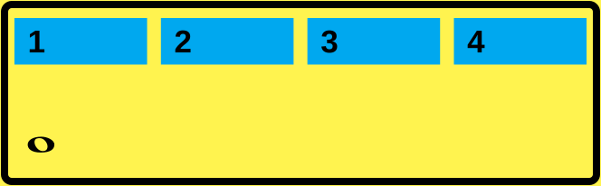
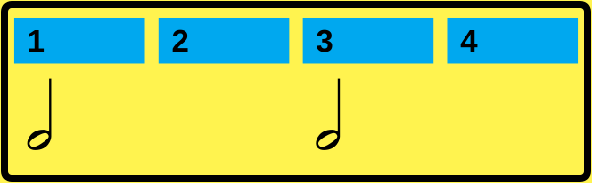
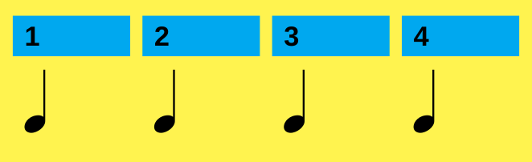
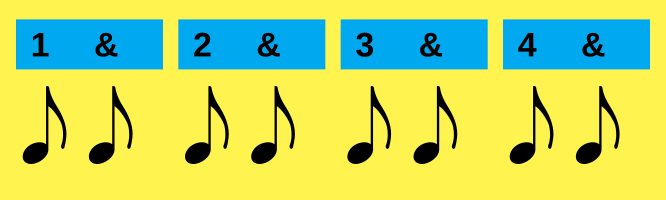
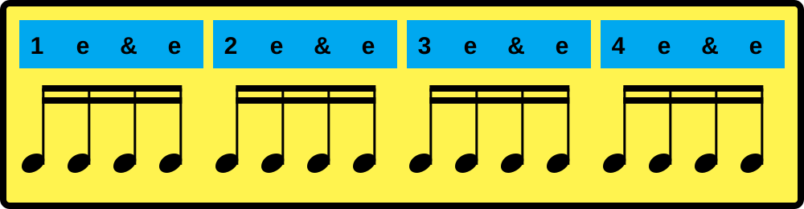
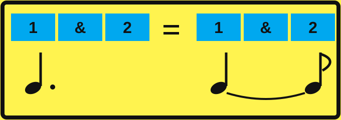
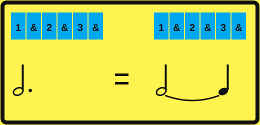
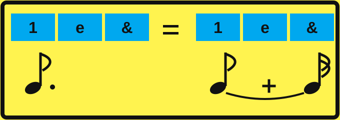

Zur Erinnerung
Die Notenwerte im 4/4-Takt.
Jeder gelbe Takt zeigt, wie die Noten die vier Schläge füllen. Schau dir die Beispiele noch einmal an, bevor wir Punktierungen dazunehmen.





Lektion 01
Einführung
Der Punkt verlängert einen Notenwert um die Hälfte seines ursprünglichen Werts. Eine punktierte Viertelnote dauert so lang wie drei Achtelnoten; eine punktierte Achtelnote so lang wie drei Sechzehntelnoten.
Ein Punkt direkt rechts neben einer Note verlängert sie um die Hälfte ihres eigenen Werts. Der Punkt bekommt also nicht pauschal einen festen Zeitwert: Bei jeder Note ist seine Hälfte anders lang.
Faustregel: Eine Punktierung wird genutzt, um den Rhythmus innerhalb einer Note darzustellen. Ein Haltebogen kann dieselbe Notenlänge ergeben, verbindet aber zwei Noten und kann auch über einen Taktstrich hinweg führen. Entscheidend ist, welche Schreibweise das Notenbild möglichst einfach lesbar macht.
Das lernst du.
Du liest punktierte Viertel- und Achtelnoten, zählst ihre Dauer genau und hältst den Puls auch über den nächsten Unterteilungspunkt hinweg.
So verändert der Punkt verschiedene Notenwerte.

Beispiel 2 · Punktierte halbe Note

Beispiel 3 · Punktierte Achtelnote

Lektion 02
Lesen
Leseübungen folgen.
Lektion 03
Hören
Höraufgaben folgen.
Lektion 04
Fehler finden
Fehlerfindeaufgaben folgen.
Lektion 05
Punktierungen selber setzen
Übungen folgen.